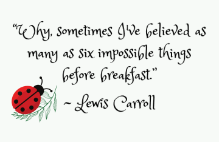

Who am I? That is the question that often arises within us at different junctures of our lives. It emerges when we contemplate switching careers or when we strive to find our true calling. Perhaps we even find ourselves molding our identity based on the influences we encounter in our social circles or through pervasive media exposure. Our sense of self can also be shaped by our geographical location, age, and personal identification.
As for me, I am an eccentric individual who struggles to remain content in a single career for an extended period. I have embarked on numerous paths, only to find myself growing restless and yearning for fresh and exhilarating experiences.
Find what you need for your growth located in my Amazon store! Everything is designed by me with the inspiration I find from you and nature.
Brief description of the podcast fills in here